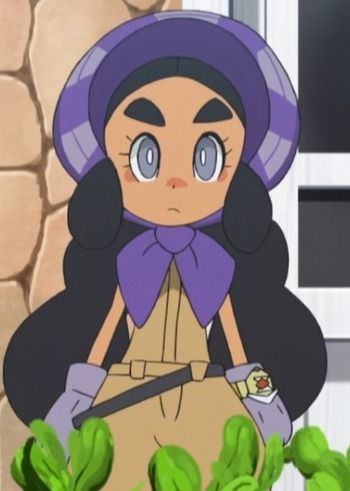
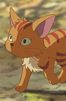
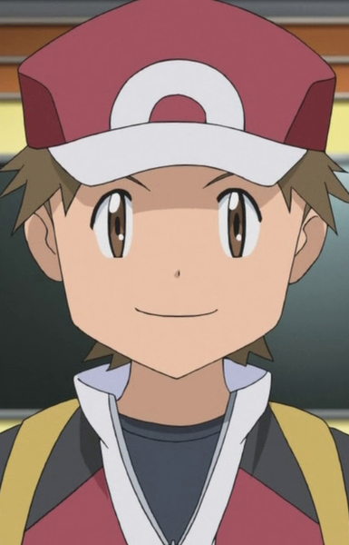

|  |
Hapu |
|
Hapu is an Island Kahuna of Poni Island. She speicalizes in Ground-type Pokemon. She is a reserved individual, spending her days by herself. She is often harvesting Poni radishes to relive the days shpent with her grandfather. She is quick to judge others despite having no evidence to support this. Upon being proven wrong, she is able to easily a nd quickly recognize her mistakes and apologize. She tends to act stoic and denies being lonely, claiming she feels corfortable being alone wven to her own Pokemon. She possesses great initimate knowledge behind the concept and true meaning of being a Kahuna. She is also impassioned battler. |
 |
Kenta Hoshino |
- Pretty Cure Splash Star
- Pretty Cure Splash Star Tic-Tac Crisic Hanging by a Thin Thread
- Pretty Cure All Stars Movie DX2: Kibou no Hikari Rainbow Jewel o Mamore
- Pretty Cure All Stars Movie DX3: Reach the Future! The Rainbow Flower that Connects the World
|
Kenta Hoshino is Saki's childhood friend. Kenta acts like the class clown and he loves to make people laugh. He loves making people smile from the bottom of his heart. He has a crush on Saki Hyuuga. |
|  |
Mimi |
- Children Who Chase Lost Voices
|
Mimi is a cat who keeps Asuna company. |
|  |
Red |
|
Red is a trainer who aims to complete the Pokedex. He is a cheerful trainer. |
 |
Rin Natsuki |
- Yes! Pretty Cure 5
- Yes! Pretty Cure 5 Movie: Great Miraculous Adventure of the Mirror Country!
- Yes! Pretty Cure 5 GoGo!
- Yes! Pretty Cure 5 GoGo!: Happy Birthday in the Sweet Kingdom
- Pretty Cure All Stars GoGo Dream Live!
- Pretty Cure All Stars Movie DX: Minna Tomodachi Kiseki no Zenin Daishuugou
- Pretty Cure All Stars Movie DX2: Kibou no Hikari Rainbow Jewel o Mamore
- Pretty Cure All Stars Movie DX3: Reach the Future! The Rainbow Flower that Connects the World
- Pretty Cure All Stars New Stage: Future Friends
- Pretty Cure All Stars New Stage 2: Friends of the Heart
- Pretty Cure All Stars New Stage 3: Friends Forever
- Pretty Cure All Stars Movie: Spring Carnival
- Pretty Cure All Stars the Movie: Everyone Sing! Miraculous Magic
|
Rin Natsuki or Cure Rouge is a member of Pretty Cure 5. This second year student appears tomboysih and sporty. She has very straightforward personality compare to Nozomi. Her parents runs a flower shop and she helps there. |